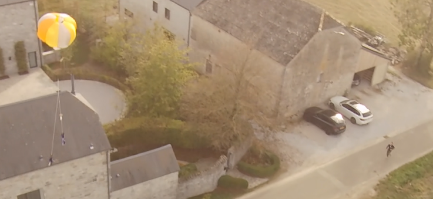
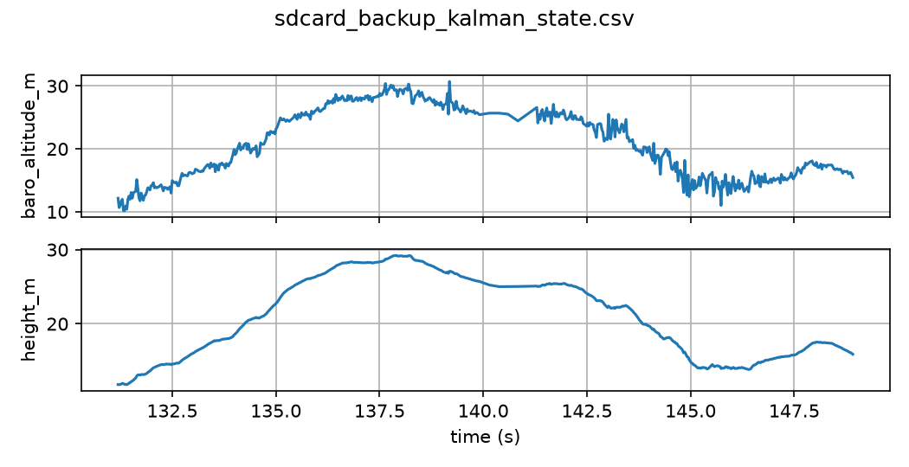

Portfolio - Cedric Mekeirle
Embedded Software Engineer
Specializing in FreeRTOS flight computers, safety-critical C/C++, and low-latency Linux/Android video streaming. I focus on hands-on hardware integration, real-time sensor fusion, and reliable fault recovery.
Antares First Launch - September 2026
Flight Software & Pad Operations
I wrote the flight computer software, covering telemetry transmission, flash/SD logging, and automatic parachute deployment logic. On launch day, I operated mission control, running health checks and making the flight readiness calls.
When telemetry cut out during the first launch window, I called an abort. Looking through the raw logs, I traced the issue to a bad PCB connector on the launch rail. The pad team re-seated the wiring, and we flew cleanly in the next window.
Recovery System

Post-Flight Debugging & Filter Tuning
When the parachute deployed early instead of at apogee, flight logs showed the variance on the estimated altitude being bigger than expected.
Since we didn't have enough time to get another launch opportunity in time, we mounted the avionics bay onto a drone in an attempt to recreate flight dynamics. Over three test flights, I made sure that acceleration and barometer updates are in sync, explicitly normalized the quaternions, and tuned the Extended Kalman Filter to handle rapid barometer pressure spikes.

Pre-Launch Crunch & Board Redesign (EUROC)
Two months before EUROC, RF compliance issues forced us to switch to a new V2 flight computer. With new PCBs being partially implemented only about 4 weeks before launch, I focused on shipping the absolute essentials: recovery logic, SD logging, and basic telemetry.
We had all core features hardware-tested two weeks ahead of launch. At the same time, three new developers joined the team, so I spent time onboarding them, breaking down tasks, and keeping the software pipeline moving under tight deadlines.
Hands-On Rocketry & Hardware Projects
I build and fly my own rockets to test aerodynamics, motor thrust curves, and recovery deployment hands-on. Currently preparing for my Tripoli/NAR Level 1 high-power certification flight by late 2026.
Professional Experience - Barco
Joined Barco in July 2026 as an embedded software engineer in the Meeting Experience group, working directly on low-latency video streaming in C++ across Linux and Android.
- Tracked down and fixed a low-level video corruption issue tied to hardware acceleration on specific Intel GPU drivers.
- Added support for new USB camera formats, extending hardware compatibility for customer setups.
- Took ownership of a video streaming component within three months, handling code reviews and pull request approvals.